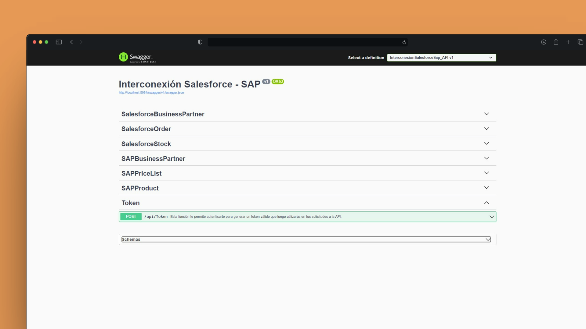
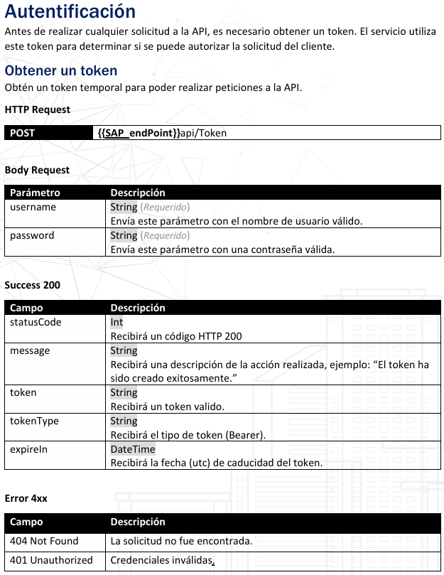
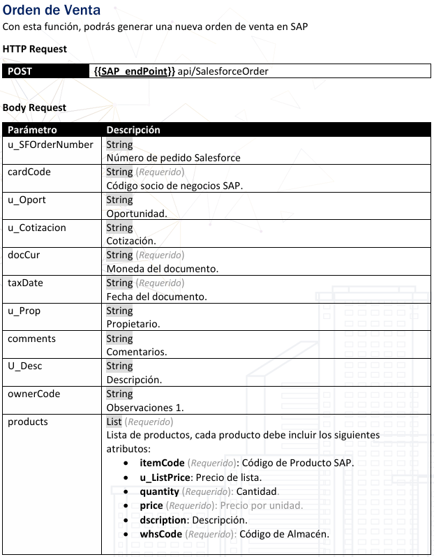
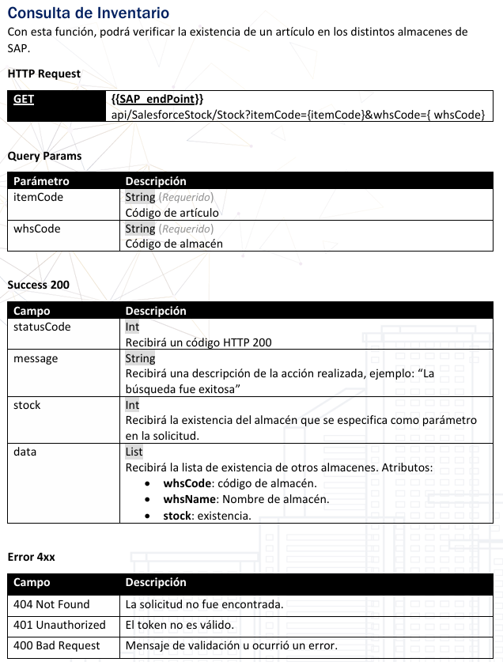

API Integración Salesforce ↔ SAP B1
Integración empresarial para automatizar órdenes de venta y sincronizar datos críticos entre Salesforce y SAP Business One con una API REST segura en .NET 8.


API REST con C#
Salesforce y SAP B1
Auth segura por token
Datos maestros e inventario
El proyecto resolvió la necesidad de conectar el proceso comercial de Salesforce con la operación en SAP Business One. La API actúa como una capa de integración que valida solicitudes, transforma estructuras de datos y orquesta operaciones críticas sin depender de captura manual.
Contexto y solución
La integración centraliza la comunicación entre CRM y ERP para crear órdenes de venta, consultar inventario, gestionar clientes, leer listas de precios y mantener productos sincronizados. El objetivo fue reducir fricción operativa sin sacrificar control, trazabilidad ni seguridad.
Impacto y capacidades
Automatización comercial
Pedidos generados desde Salesforce llegan a SAP B1 con menor captura manual.
Datos consistentes
Clientes, artículos, stock y precios se consultan desde fuentes operativas controladas.
Integración segura
Autenticación por token, validaciones de entrada y control de acceso a endpoints críticos.
API documentable
Contratos REST claros para pruebas, consumo externo y mantenimiento por equipos técnicos.
Flujo técnico de integración
La solución separa la exposición REST, las reglas de validación, el mapeo de entidades y la comunicación con sistemas externos para mantener una integración legible y mantenible.
Origen de solicitudes comerciales, clientes, productos y órdenes a procesar.
Autenticación, validación, transformación de payloads y orquestación de casos de uso.
Creación de documentos comerciales y consulta de datos maestros de operación.
Lecturas de inventario, listas de precios y estructuras persistidas del ERP.
Endpoints destacados
/api/Token
Generación de token para autenticación y consumo seguro de la API.
/api/SalesforceOrder
Creación de órdenes de venta en SAP desde información comercial de Salesforce.
/api/SalesforceStock/Stock
Consulta de inventario disponible por artículo y almacén.
/api/SalesforceBusinessPartner/Create
Alta de clientes en SAP B1 desde datos enviados por Salesforce.
/api/SAPPriceList
Consulta de listas de precios para alimentar procesos comerciales.
/api/SAPProduct/{itemCode}
Actualización de productos sincronizados hacia Salesforce.
Seguridad y consistencia
Control de acceso y validación de datos críticos
La API integra autenticación por token, soporte de flujos OAuth 2.0, validaciones de entrada, mapeo controlado entre entidades CRM/ERP y pruebas con Postman para reducir errores en procesos sensibles.
Mi rol
Diseñé la arquitectura backend de integración entre Salesforce y SAP Business One.
Desarrollé endpoints REST, validaciones, mapeos y lógica de negocio.
Implementé autenticación, autorización y contratos de consumo para procesos críticos.
Probé flujos comerciales con Postman y ajusté payloads para compatibilidad entre sistemas.
Una integración robusta para conectar ventas y operación.
La solución redujo trabajo manual, mejoró la confiabilidad del flujo CRM/ERP y dejó una base técnica mantenible para operar órdenes, clientes, inventario, precios y productos desde una API centralizada.
-
Periodo:
2024
-
Tipo:
Backend / Integración empresarial
-
Empresa:
IT Consultant / Cliente privado
-
Rol:
Backend Developer
-
Arquitectura:
API REST, integración CRM/ERP y SAP HANA
-
Disponibilidad:
Proyecto interno / No público
Capturas de la integración
Autenticación, creación de órdenes y consultas operativas expuestas por la API.


Autenticación mediante token para proteger el consumo de endpoints internos.


Creación automática de órdenes de venta en SAP desde información comercial de Salesforce.


Consulta de inventario para validar disponibilidad por artículo y almacén.